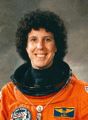

Lyndon B. Johnson Space Center
Houston, Texas 77058
|
National Aeronautics and Space Administration Lyndon B. Johnson Space Center Houston, Texas 77058 |
 |
Biographical Data |
||
Ellen S. Baker (M.D., M.P.H.)
NASA ASTRONAUT (FORMER)
PERSONAL DATA: Born April 27, 1953, in Fayetteville, North Carolina, but considers New York City her hometown. Married to Kenneth J. Baker. They have two daughters. She enjoys swimming, running, movies, music, and reading. Ellen’s parents, Dr. and Mrs. Melvin Shulman, reside in Beechhurst, New York. Ken’s parents, Mr. and Mrs. James Baker, reside in Columbus, Ohio.
EDUCATION: Graduated from Bayside High School, New York, New York, in 1970; received a bachelor of arts degree in geology from the State University of New York at Buffalo in 1974, a doctorate of medicine degree from Cornell University in 1978 and a master’s degree in public health from University of Texas School of Public Health in 1994.
EXPERIENCE: After completing medical school, Dr. Baker trained in internal medicine at the University of Texas Health Science Center, San Antonio, Texas. She is certified by the American Board of Internal Medicine.
NASA EXPERIENCE: In 1981, following her residency, Dr. Baker joined NASA as a medical officer at the Johnson Space Center.
Dr. Baker was selected as an astronaut by NASA in May 1984. Since then, she has worked a variety of jobs at NASA in support of the Space Shuttle and Space Station Programs and development of the Exploration Program. A veteran of three space flights, Dr. Baker has logged more than 686 hours in space. She was a mission specialist on STS-34 in 1989, STS-50 in 1992 and STS-71 in 1995.
Dr. Baker retired from NASA in December 2011 to pursue other interests.
SPACEFLIGHT EXPERIENCE: STS-34 Atlantis (October 18 to October 23, 1989) launched from the Kennedy Space Center in Florida and landed at Edwards Air Force Base in California. During the mission, the crew successfully deployed the Galileo spacecraft to explore Jupiter, mapped atmospheric ozone and conducted several medical and scientific experiments. Mission objectives were accomplished in 79 orbits of the Earth, traveling 1.8 million miles in 119 hours and 41 minutes.
STS-50 Columbia (June 25 to July 9, 1992) launched and landed at the Kennedy Space Center in Florida. STS-50 was the first flight of the United States Microgravity Laboratory and the first Extended Duration Orbiter flight. Over a 2-week period, the crew conducted scientific experiments involving crystal growth, fluid physics, fluid dynamics, biological science and combustion science. Mission objectives were accomplished in 221 orbits of the Earth, traveling 5.7 million miles in 331 hours 30 seconds and 4 minutes in space.
STS-71 Atlantis(June 27 to July 7, 1995) launched from the Kennedy Space Center with a seven-member crew and returned with an eight-member crew. STS-71 was the first Space Shuttle mission to dock with the Russian Space Station Mir and involved an exchange of crews. The crew also performed various life sciences experiments and data collections. Mission objectives were accomplished in 153 orbits of the Earth, traveling 4.1 million miles in 235 hours and 23 minutes.
JANUARY 2012